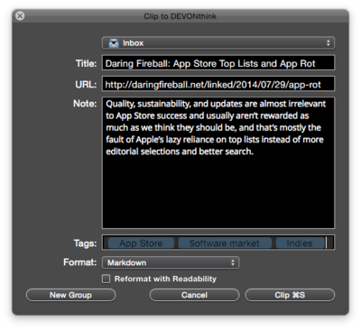

| |

|
|
Capture data from the web
|
|

Increasingly, information is provided not on paper but directly through Web sites, blogs, online news sites, Facebook, and user forums. DEVONthink Pro Office offers a variety of options for conveniently capturing data from the Web:
-
Bookmark: Captures only the address (URL, uniform resource locator) of the page.
-
HTML page: Saves the source code of the page to the database, but images are downloaded from the Web each time the page is displayed in the database.
-
Web archive: Saves both the HTML code and all resources, like images, necessary to display the page.
-
Rich text: Grabs selected text/images and hyperlinks, but avoids saving unwanted areas of the page to the database. A plain text capture will not include formatting, images or links.
-
PDF: 'Freezes' the web page, just like printing to paper. PDFs from Web pages can be paginated or non-paginated.
All of these options, except the bookmark, capture the text content of the page (or a selected area of it) and hyperlinks if present, and preserve the text information for searches in DEVONthink Pro Office.
|
Note: There are a number of Web sites that prohibit use of some of the capture options described above. A secure banking site or a university portal to journals may direct a Bookmarklet or script capture option to the login page, which will be captured instead of the desired content. A capture option that requires re-download of the page on such sites will capture only the login page. The page always can be selected and captured as rich or plain text. The viewed page can be captured by "printing" it as PDF to the database.
|
Possible uses:
- Capture important news in an easily searchable database
- Collect all relevant data for your project in one place
- Collect links to web pages and captured data about the same subject in one group
- Save data from the Web in future-proof formats such as PDF
Continue to read here:
|